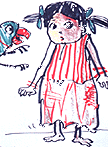

Meena was conceived in the early 1990s with the help and guidance of Hanna-Barbera Cartoons. The project came out of a need to confront the extreme discrimination against girls in the South Asia region of the world. The goal of the Meena initiative was to create a girl character that would represent little girls in Bangladesh, India, Pakistan and Nepal, dealing with serious issues in the region such as education, early marriage, unequal food and work load, while entertaining at the same time.
Coming up with a character that could successfully represent these four very different countries was no easy task. Researchers tested many different character designs throughout South Asia until they finally came up with the current Meena, whose clothes and appearance were general enough that the little girl could essentially be from any country within the region.
Draft test of Meena character from Pakistan
UNICEF spent more than a year researching the storylines to be used in the Meena series. Most important to them was to create a cartoon that dealt with the issues relevant to the people in South Asia, and to make sure the solutions offered by the film were acceptable as well. UNICEF and researchers tested all concepts, storylines, and animatics with focus groups before any film was finalized.
Through the animated characters, children recognize their own experiences and find their own voices. As a little girl in a Dhaka slum exclaimed, "I want to be like Meena. I want to go to school too." Through Meena's story, this little girl had been able to articulate her own aspirations and identify her rights. Likewise, parents become engaged with the issues and characters and review their own attitudes towards their daughters.
Today, the first series of 12 Meena episodes is nearly complete, and UNICEF is beginning to look for broadcast partners to spread the word. Broadcast test runs have shown that there is a wide audience for Meena.The series has received a warm welcome in both developing countries and industrialized countries alike. To date, the Meena series includes the following episodes:
- Count Your Chickens: Meena's father does not allow her to go to school, but Meena's parrot Mithu memorizes the school lessons and teaches her to count. One day, she notices that one of her chickens is missing and Meena's quick wit helps catch the village thief. Praised by the village headman for her counting skills, Meena's parents are encouraged to let her go to school.
- Dividing the Mango: Meena works hard every day, but it is her brother who is always given the larger portion of food. It is only when Meena and Raju decide to swap jobs for the day that Raju realizes Meena works very hard and deserves the same share of the food.
- Saving a Life: Meena's grandmother feels that Meena should not be at school, but when Meena's baby sister falls sick with diarrhoea, it is Meena and her brother Raju who seek advice from their school teacher. The teacher provides them with the life-saving message the importance of giving the baby plenty to drink to stop dehydration. This information not only saves Rani's life, but also convinces Meena's grandmother that girls need to go to school too.
- Will Meena Leave School?: In order to pay back a loan from the shopkeeper, Meena's mother may have to go to work, which would mean that Meena would have to stay home to look after her baby sister. Meena, with the aid of her teacher and all the things she has learned at school, helps her mother obtain a loan to buy a cow and a bicycle to start selling milk, a business she can run from home. Meena's help ensures that she continues to go to school.
- Who's Afraid of the Bully?: Every day, as Meena's friend Rita walks to school, the school bullies pick on her. Meena and her friends decide that if they stick together they can beat the bullies at their own game. Together they stand up to the bully and make him realize that he is the ultimate loser and it would be better if they were all friends.
- Three Wishes: Meena dreams of a magic genie that will grant her three wishes so that everyone would be healthy and never again get sick from poor sanitation and unsafe water. When Meena wakes up she realizes that she must make her dream come true. With the help of her brother, Meena convinces people to build and use latrines, to use safe water and to wash their hands to ensure that they stop the spread of germs and disease.
- Say No to Dowry: Meena's cousin Taara is going to get married, and her parents are being asked to pay a large dowry. Meena discovers that the shopkeeper and his son are greedily planning to ask for even more dowry when the couple is married. The villagers and Taara's parents meet and discuss the marriage payment and decide they should say "no" to a dowry.
- Too Young To Marry: Meena's uncle has arranged for his daughter Rita to marry the shopkeeper's son, Babu. But Rita is only 15 and has not yet finished school. With Meena's help, it comes to light that Babu, who is studying to be a doctor, does not want to get married yet, especially since he knows it is unsafe for young girls to become mothers. To everyone's satisfaction, the marriage is postponed until Rita is 18 and has completed her education.

Draft test of Meena character design from BangladeshThe series of Meena films are available in a number of languages throughout, including Bengali, English, French, Hindi, Nepali, Portuguese, Spanish and Urdu.
Focus groups in the field during the research of Meena
[upper level | home]